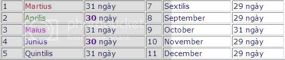
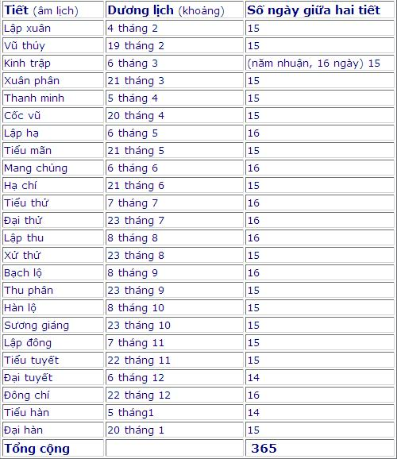

In 532, Denys le Petit, correcting the nature of Easter since the birth of Christ, which he decreed on December 25, 753 Rome. The 754th Year of Rome becomes year 1 (no year 0). This type of calculation has been used by France since the 8th century. It was later found that Denys had been miscalcundered for at least four years. 2000 should have been 2005.
In 1515 Copernic attended the calendar revision.
1582 Gregory III invited astronomers Lilio, Clavius and Chacon to create a new calendar and found that according to the sun, César was 10 days late, so the pope jumped to 10 days for Rome and the countries of Espagne and Portugal: after October 4, 1582, October 15, 1582. France followed later, until December 9, 1582, and England waited until August 2, 1752, for an additional 11 days (after September 2, 1752).
In the 14th century, the date of schooling.
In the late 16th century, educated people knew what day, month, and year they were in thanks to the calendar and from there they were able to record the events that occurred. Without a calendar, there would be no history.
From the 16th to the 19th centuries, Europe expanded, making the world aware of the Grégorien calendar: the american, Asian and African colonial peoples had to use their own calendars, and after independence, they continued to use it.
About 1,550 historical calendars appear in Germany:
In the 17th century, the calendar was used to organize the future. Since 1679, the Academy of Sciences has printed an official calendar every year and has since reprinted it in most calendar books (almanach).
In the 19th century, agendas and calendars were slowly popularized. The calendar form is the same as the calendar we currently use: days of the week and the number of days of the month.
In 1834, Pie Marc Mastrofini proposed that the end of the year be a "white day" that does not count, so that every other day gathers exactly 52 weeks (52x7 =364 days).
In 1849, Auguste Compte scheduled 13 months evenly, followed by a "white day."
Camille Flammarion, after calling against the Gregorien calendar, made a 12-month calendar featuring the same triangulations (calendrier universel).
In 1884, time zones were divided into 24 zones of slitting from north to south with greenwich meridian as the standard.
Since 1922, the Association of Nations has established a committee to study calendar revisions and concluded that there must be no change of calendar but a stable date for the Pâques holiday.
The ONU League of Nations, which finds that the Gregorien calendar is not suitable for current economic activity, intends to revise the calendar for the 21st century (which has been foresqualid for an international examination).
From the beginning, the calendar was created from the lunar cycle. In 753 BC, the time of Rome's establishment, a year had 10 months as follows:
Naming the month:
At first, people named it in lyretic order, but eventually they decided to use the names of the gods for a few months:
The first month takes the name of the god of war Mars after the Myth of Rome because Mars is also considered the god of trees, spring and youth. Mars has long been the first month of the year.
The second month takes the name Aperta, the nickname of Apollon, the god of art(music), of medicine, of prophecy and divination. First, northern Greece, Apollon was also known as Phoebos, the sun god.
The third month is Maïus, the common name for Jupiter.
The fourth month is Junon, Jupiter's wife.
Other months continue to use numbers [quin (5), sex (6), sept(7), oct (8), no (9) dec (10)].
But then for the sake of the officials in the election, the error of the calendar grew, and finally in 708 Rome (46 BC), the equinox (équinoxe, spring equinoxe and autumn equinox) was three months apart. It means harvesting in January, the coldest month!
It was then that General Julius Caesar intervened. To end the abuse of politicians at the time, Julius Caesar dispatched a Greek astronomer named Sosigene of Alexandrie to modify the crop calendar to suit the calendar (of Egyptian origin) established by the Greek astronomer Eudoxe in the 4th century BC.
The Julien calendar has 365 days, divided into 12 months and an additional 1 day every four years. This calendar remained in use until the 20th century in some countries.
However, with this system, there are too many years because compared to the astronomical season, there are about 11 minutes earlier each year. Caesar seemed to know this, but he didn't consider it important.
However, this calendar is basically 365 days a year and exactly 6 hours, but in fact a century is reduced by half a second and for example Julius's time is 365 days 5 hours 48 minutes and 56 seconds, through the end of the 16th century is 365 days, 5 hours, 48 minutes 47 seconds until the 20th century, to 365 days 5 hours 48 minutes 46 seconds. If you count an even schedule of 365 days and 6 hours, with an error of 11 minutes for a year, it is wrong to be 1 day every 128 years.
At the time of the reform of the julien calendar, spring feces arrived on March 25
In 325 on the 21st until the 16th century, the spring feces arrived on the 10th of the same month when the calendar dated the 21st spring and feces, the spring feces had actually passed 10 days. Pâques was celebrated too late. And if the gap is growing, one can celebrate Pâques 1, 2, 3 months after the astronomical day and the date on the calendar will no longer correspond to the seasons of the year...
That's why we have to change to correct it. At this time the popes in Rome replaced the emperors, so this period Pope Gregory XIII took the lead. In 1582 he issued an executive order to cancel 10 days of the calendar.
To avoid the wrong calendar as last time, the Pope decided to add 4 new years to a day.
This calendar, called the grégorien calendar, applies to Christian countries and to France instantly. In Rome, Espagne and Portugal, as well as Christian churches, the next day of Thursday 4 October 1582 is October 15, 1582. During the reign of Henri III, the next day of Sunday, December 9, 1582, was Monday, December 20, 1582. Britain had to wait until September 3, 1752 to apply, Russia in 1918, Greece in 1923, Only 26 years after the reform of the calendar of Pope Gregory XII, Quebec adopted (1608), Japan: 1873, China 1912, Greece, Roumanie: 1820 ...
In 1897 in the commune of Coligny, between Ain and Jura on the road from Lyon to Strasbourg, more than 550 pieces of bronze, probably of metal diggers were discovered. Of the copper fragments found, about 400 pieces formed into large idols, and 150 pieces made up of calendars. They were bought by the Lyon Museum and restored. The calendar consists of a length of 150 cm and 80 cm of width, divided into a 5-year cycle (called "lustre"), each year 12 months alternating 30 and 29 days. But to get along with the solar year, it takes an additional 2 months of leap (30 days).
This type of calendar follows the rotational cycle of both the moon and the sun: in the 5-year cycle (lustre) consists of 3 years there are 12 months 29 and 30 days and 2 years have 13 months (two more months are 30 days).
Twenty-five years after julien reform, gaulois still use their old calendars without religious holidays.
The calendar is written in gaulois, but engraved into Roman letters and numbers, consisting of 16 columns, more than 2000 words for which more than half of the letters are preserved and is considered the longest written article in gaulois to date.
If you count the repeating words, there are 60 different gaulois words. Many words are unknown. For example, does the word Atenoux not know if it is "returning to darkness"? , is mat and anmat "favorable" and "detrimental" or is "complete" and "lacking"?
Gaulois people calculate that every "century", i.e. 30 years (because according to them, 30 years is a human life, including 6 lustre, each lustre is 5 years) is to spend 30 days surplus to have an average year of 365.2 days.
A year is divided into 2 moonfish and each month is divided into two times 15 days separated by atenoux and before each day leave a hole to put in a latch just the day used. The date is written from I to XV before ATENOVX (V = U), and after this letter is from I to XIII or XV.
The gaulois man calculates the day from dark. There is no word "week" or "crop."
The year begins in November.
62 months are divided into 16 columns. There are 14 month names: the names of 12 months repeat 5 times, the other 2 only appear once.
Here's the name of the 12 months:
X... (first leap month), SAMON, DUMAN, RIUROS, ANAGANTIO, OGRON, CUTIOS, CIALLOS B.IS (2nd leap month), GIAMONI, SIMIVIS, EQUOS, ELEMBIU, AEDRINI et CANTLOS.
Details of the year gaulois are not clearly defined.
The calendar is complex, typefaced and numerical, indicating that it dates back to the 2nd century, two centuries after the julien calendar. And since the calendar is explored in common with the idol, it is thought to be the religious calendar placed in the temple.
The Republic calendar was established by the Treaty of October 5, 1793.
The calendar begins on September 22, 1792, the date of the founding of the Republic.
A year divided into 12 months, each month divided into 3 times 10 days = 30 days
5 more days: 360 + 5 = 365 named Vertu, Génie, Travail, Opinion and Récompenses
One extra day in the good years is the national day.
Napoleon cancelled the calendar on January 1, 1806 and changed it back to the Grégorien calendar.
The people were confused and did not know the date, but they suffered because otherwise they would be executed. However, some people think it has poetry that should set the song.
This calendar theoretically began on September 22, 1792, but was used after a year. Lasted until December 31, 1805, meaning 13 years and 3 months. It was then used by Paris from May 6 to 23, 1871 (i.m., from May 16 to May 3, 1871).
Vietnamese people use the lunar calendar to calculate the ceremony and choose the day for important tasks such as wedding, building houses, opening business shops ... This lunar calendar is like the Chinese lunar calendar, which is based on the moon's cycle and coordinates with the movement of the earth around the sun. Each year there are 12 months, the full month has 30 days, the missing month, 29 days. Every 19 years, the profit is 7 times, each time a month. The first month of the year is January and the last month of the year is december that should never be taken as leap month. New Year's Day, the first day of the lunar new year, is the second day of the lunar new year after the Winter solstice, often referred to as the longest night of the year. Depending on the moon on the Eastern Sol monday, the first day of the year will come between 30 and 59 days after that date. Therefore, the first day of Tet can only be between January 20 and February 21 of the calendar. The lunar month usually goes after the calendar month one or two things, such as the lunar march corresponding to April or the month of the calendar year.
The lunar year is not calculated by numbers but uses a compound name of two words. The first letter is one of the 10 heavenly cans (Giap, Noi, Bính, Dinh, Mau, Ky, Canh, Tan, Tram and Quy). The second word is one of the 12 sub-branches (Ty, Tau, Gradual, Crown or Tip, Cun, Tuan, Ngo, Smell, Body, Rooster, Tet and Pig). Twelve genera are the names of 12 animals. The Vietnamese lunar calendar is different from the Chinese lunar calendar in that the Year of History is according to the Vietnamese calendar is the year of the buffalo, while China is the cow, and the Year of the Crown or Tip in Vietnam is the year of the cat, in the Chinese calendar is the year of the rabbit. Since the common multiples of 10 (heavenly cans) and 12 (geo genera) are 60, every 60 years, the names of the years are correctly corrected again. And so each can only goes with six of the 12 branches, or each year according to the gene can only go with 5 cans. For example, Can Giap only goes with the years of Ty, Gradual, Cun, Ngo, Ton and Tet, while Can Dien only goes with the years of Use, Crown, Horse, Smell, Rooster and Pig.
Tran Ngoc Thuy Trang (former president of UVSA) commented that the years starting with Can Canh have a unit number of 0, Tan has a unit number of 1... according to the number of calendar years, but the correspondence is unknown. In fact, it is correspondence one to one: since the number system is used in decimal, from 0 to 9, the number of units per year corresponds to ten cans, does not move, does not change. The year with can Canh always corresponds to the calendar year with the last number of 0 (such as Canh Cuong is 1940, 2000; Canh Ngo is 1990, Canh To is 1980...), The last number is 1 (Tan Tien is 1941, 2001; Tan Smell is 1991, Tan Rooster is 1981...), Tram corresponds to the last number of 2 (Tram Ngo is 1942, 2002, Tram To is 1992, Tram Tet is 1982 ...), Quarter, with the last number is 3 (Guiyi is 1943, 2003; Guihai is 1983, Quarter Rooster is 1993 ...), Armor corresponding to the last number is 4 (Armor is 1944, 2004; Armor Is 1994, Giap Phat is 1974 ...) et cetera. Every twelve years as a great year, 60 years as a cycle and 3,600 years as an epoch.
Each lunar year is divided into 24 parts.
In addition to Vietnam and China, Japan also uses the lunar calendar as above.
The Japanese call it ki. Spring division in Japanese is Shunbun, summer sol sol is Geshi, Autumn stool is Shuubun and East Solfect is Touji.
The monthly name in the Japanese calendar was not in the way of counting numbers but by crop or field work. January is MuTsuki means spring, March is Yayohi, which means green grass, June is Mina Tzuki, watering month (bringing water into the field), August is Ha Tzuki, i.e. month of leaves. Especially october, known as the month of the gods, KaNa Tzuki because of the legend of the gods meeting at Izumo Shrine in shimane. Therefore, October is still considered as the month without divine protection in other governments.
The lunar month has three weeks, according to the moon: upper, midweek and lower week. The Japanese lunar calendar has divided the week by seven days since 807. In 806, Koubou Daishi said it was impossible to accurately calculate the bad day in the Japanese calendar because he did not know the secret day, japanese as Mitsubi. In fact, Mitsubi is due to the word Mitsu, the sound from the Samarkand me-ruu dialect is Sunday. Since then, the Japanese calendar has adopted a seven-day week after the sun and the names of the six planets in the solar system. In his 1007 memoir, Michinaga Fujiwara recorded September 23 as the third day (Kayoubi), the day of Mars.